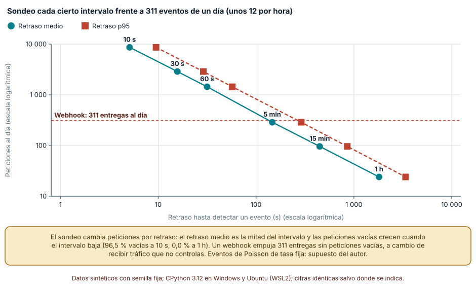
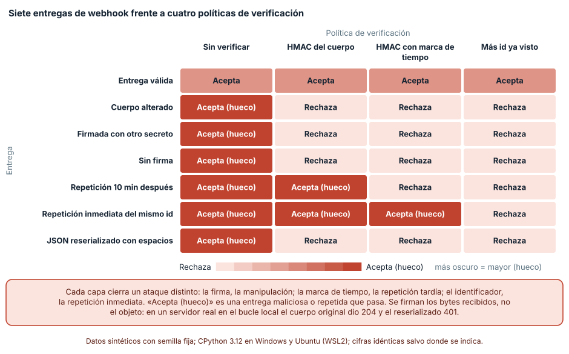
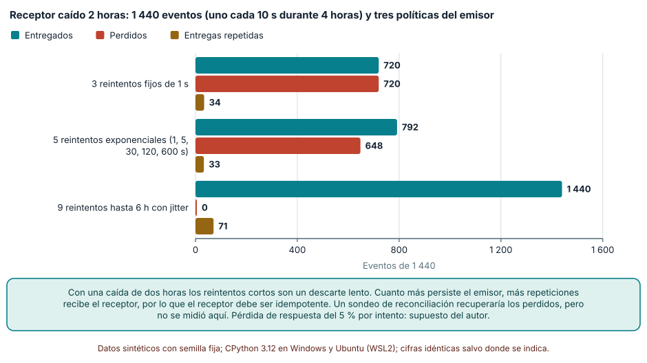

← SE-378 — CDC, ETL, ELT y sincronización · ↑ Parte 31 · 📚 Índice completo · 🌐 Portal · SE-380 — Compatibilidad de esquemas y registros →
Punto profesional y fundamento pedagógico
Punto profesional. La clase existe para que decidas cómo se entera tu sistema de lo que ocurre en otro que no controlas, con el costo de cada opción a la vista: aprenderás a medir cuántas peticiones vacías cuesta sondear a un intervalo dado y cuánto retrasa un evento, qué ataques cierra cada capa de verificación de un webhook y cuántos eventos se pierden o se repiten según la política de reintentos del emisor.
Por qué aparece aquí. Sigue a CDC, ETL, ELT y sincronización: allí el origen y el destino eran bases de la misma organización; aquí el otro lado es un sistema ajeno (el proveedor de correo, la plataforma de videollamadas del curso, el sistema académico externo) que no ofrece acceso a su base, solo una interfaz pública. En el flujo de la plataforma de entregas, un proveedor externo avisa de una nota importada o de un correo rebotado y hay que decidir si esperar su llamada o ir a preguntarle.
Error conceptual que debe corregir. Creer que un webhook es una forma gratuita de recibir eventos «en tiempo real» y que el sondeo es la opción anticuada. El webhook traslada al receptor la obligación de estar disponible, autenticar quién llama, tolerar repeticiones y desorden y reconciliar lo que nunca llegó; el sondeo cuesta peticiones, pero el receptor controla cuándo y qué pregunta.
Secuencia de aprendizaje. Antes de leer los resultados, predices qué fracción de las peticiones de un sondeo cada 60 segundos vuelve vacía con 12 eventos por hora, cuáles de siete entregas maliciosas o accidentales acepta una verificación que solo firma el cuerpo y cuántos de 1 440 eventos se pierden si el receptor cae dos horas y el emisor reintenta tres veces en tres segundos; después mides las tres cosas y comparas con tu predicción. La secuencia usa predicción, explicación propia, contraste y recuperación. ICAP distingue participación de construcción de conocimiento; How People Learn II exige conectar conocimiento previo, contexto y transferencia; la práctica de recuperación respalda producir de nuevo la explicación tras una demora; y Education for Life and Work exige devolución que explique la causa del error.
Evidencia de aprendizaje. avisos-log.md con las predicciones, las tres figuras reproducidas, el contrato de recepción de un webhook de la plataforma (verificación, respuesta, idempotencia y reconciliación) y una tabla que justifique, para dos proveedores, si se usa webhook, sondeo o ambos con su intervalo de reconciliación.
Límite de la conclusión. Los eventos (una tasa fija de 12 por hora), la pérdida de respuesta del 5 % por intento y los calendarios de reintento son supuestos del autor; los sondeos y los reintentos se simulan sin reloj ni red. El único componente real es un servidor HTTP en la interfaz de bucle local con un puerto efímero que verifica firmas sobre los bytes recibidos. No se usó ningún proveedor ni dominio externo: los números muestran mecanismos, no el comportamiento de ningún servicio.
Trazabilidad fuente → afirmación
| Fuente primaria u oficial | Afirmación que respalda | Lo que no prueba |
|---|---|---|
| Stripe: webhooks | Documenta firmas de las entregas, verificación sobre el cuerpo crudo, tolerancia de marca de tiempo, reintentos y la posibilidad de recibir un evento más de una vez. | No describe a otros proveedores ni fija los valores de la plataforma. |
| GitHub: validar entregas de webhooks | Describe firmar la carga con HMAC-SHA256 y compararla con una comparación de tiempo constante. | No cubre la repetición de una entrega válida. |
| Standard Webhooks | Propone una convención común de identificador, marca de tiempo y firma en los encabezados de un webhook. | No es una obligación para los proveedores ni mide su adopción. |
| RFC 2104: HMAC | Define el código de autenticación de mensajes con clave basado en una función hash. | No fija la duración de la ventana ni el almacenamiento del secreto. |
| RFC 9110: semántica de HTTP | Define las peticiones condicionales y los validadores (ETag, fecha de modificación) que permiten sondear sin transferir lo que no cambió. | No dice qué intervalo de sondeo conviene a la plataforma. |
Antes de empezar
Recupera lo aprendido en SE-376 sobre repeticiones y ventanas de deduplicación, en SE-373 sobre reintentos y en la Parte 19 sobre seguridad web: toda entrada que llega de fuera es no confiable hasta que se verifica. La pregunta activa es: ¿qué debe ocurrir si esta llamada llega dos veces, tarde, alterada o nunca?
Prerrequisitos
- Haber completado
SE-378o poder explicar por qué sincronizar exige idempotencia. - Python 3.11 o posterior; los experimentos usan solo la biblioteca estándar (
hmac,hashlib,http.server) y generadores con semilla fija. - Entender qué es un código de autenticación de mensajes con clave y una petición HTTP
POSTcon cuerpo.
Problema auténtico
La plataforma de entregas importa notas desde un sistema académico externo. Al principio consultaba su interfaz cada cinco minutos: 288 peticiones al día para unos 12 cambios por hora, con la mayoría vacías, y un estudiante podía esperar hasta cinco minutos para ver su nota. El equipo contrata el aviso por webhook y expone una dirección pública que recibe las notas. Una semana después una persona de otro equipo prueba la dirección con una herramienta y crea 40 notas falsas porque nadie verificaba quién llamaba; luego el proveedor tiene una caída y reintenta durante horas, y el receptor aplica algunas notas dos veces. En un mantenimiento del receptor se pierde una hora de avisos que el proveedor ya había dado por fallidos. Cada problema pertenece a un lado distinto: la autenticidad, la repetición y la disponibilidad.
Objetivos observables
Al terminar podrás:
- calcular el costo de un sondeo (peticiones al día, peticiones vacías, retraso medio y en el percentil 95) para un intervalo dado;
- verificar la firma de un webhook sobre los bytes recibidos y explicar qué ataque cierra la marca de tiempo y cuál el identificador visto;
- medir cuántos eventos se entregan, se pierden o se repiten según el calendario de reintentos del emisor;
- diseñar el contrato de recepción: verificación, respuesta rápida, idempotencia y reconciliación periódica;
- decidir entre webhook, sondeo o ambos para dos proveedores con criterios explícitos.
Mapa conceptual
Ver la notación fuente del diagrama
flowchart LR
A[Cambio en el proveedor] --> B{¿Quién inicia?}
B -->|el proveedor empuja| C[Webhook]
B -->|la plataforma pregunta| D[Sondeo con petición condicional]
C --> E[Verificar: firma, marca de tiempo, identificador]
E --> F[Responder rápido y encolar]
F --> G[Procesar de forma idempotente]
D --> G
G --> H[Reconciliar por listado periódico]
H -->|diferencia| AEl mapa separa quién inicia la comunicación del tratamiento posterior, que es el mismo en ambos casos. La reconciliación vuelve al proveedor porque ni el webhook ni el sondeo garantizan haberlo visto todo.
Temas y por qué importan
| Tema | Por qué cambia una decisión profesional | Evidencia mínima |
|---|---|---|
| Empujar o tirar | Reparte la disponibilidad y el costo entre emisor y receptor. | Predicción, traza causal y contraejemplo de Empujar o tirar en avisos-log.md |
| Webhooks | Exponen una dirección pública que debe autenticar y tolerar repeticiones. | Predicción, traza causal y contraejemplo de Webhooks en avisos-log.md |
| Autenticidad y repetición | La firma no basta: una entrega válida puede reenviarse. | Predicción, traza causal y contraejemplo de Autenticidad y repetición en avisos-log.md |
| Sondeo y peticiones condicionales | Cambia peticiones por retraso y puede evitar transferir lo que no cambió. | Predicción, traza causal y contraejemplo de Sondeo y peticiones condicionales en avisos-log.md |
| Suscripciones y reconciliación | El aviso es una pista y el listado es la verdad. | Predicción, traza causal y contraejemplo de Suscripciones y reconciliación en avisos-log.md |
Conceptos y decisiones
1. Empujar o tirar
En el modelo de empujar (webhook), el proveedor llama al receptor cuando algo ocurre; en el de tirar (sondeo), el receptor pregunta cada cierto tiempo. El primero da baja latencia y pocas peticiones, pero obliga al receptor a exponer un punto de entrada, estar disponible cuando el proveedor llama y aceptar el calendario de reintentos del otro. El segundo conserva el control (cuándo, cuánto, qué), no requiere exponer nada y es sencillo de depurar, a cambio de peticiones vacías y de un retraso que depende del intervalo. No son excluyentes: la combinación habitual usa el webhook como pista de baja latencia y el sondeo como red de seguridad.
2. Webhooks
Un webhook es una petición HTTP POST que el proveedor dirige a una dirección del receptor con un cuerpo que describe el evento. Su contrato implícito tiene cuatro partes: el receptor debe responder rápido con un código de éxito (el proveedor considera fallida cualquier respuesta lenta o de error y reintenta), no se garantiza orden entre eventos, se puede recibir el mismo evento más de una vez y no hay garantía de haber recibido todos. Por eso el cuerpo debe tratarse como un aviso y el tratamiento real (aplicar la nota) hacerse de forma asíncrona e idempotente: el manejador verifica, guarda en una cola y responde, y un trabajador procesa.
3. Autenticidad y repetición
La dirección de un webhook es pública, así que cualquiera puede enviarle una petición. La defensa es una firma: el proveedor calcula un HMAC del cuerpo con un secreto compartido y lo envía en un encabezado; el receptor lo recalcula y lo compara con una función de tiempo constante. Hay dos detalles que fallan con frecuencia. Se firman y verifican los bytes recibidos, no el objeto reconstruido: volver a serializar el JSON cambia espacios y orden de campos y la firma deja de coincidir. Y la firma no impide la repetición: un atacante que capturó una entrega válida puede reenviarla. Se cierra incluyendo una marca de tiempo firmada con una tolerancia corta (rechazar lo más viejo) y guardando los identificadores vistos para rechazar el reenvío inmediato.
4. Sondeo y peticiones condicionales
El sondeo cuesta peticiones y retraso: con un intervalo T, el retraso medio es T/2 y el peor caso T. Se abarata con peticiones condicionales: el receptor envía el validador de la última respuesta (If-None-Match con un ETag, o la fecha de modificación) y el servidor responde sin cuerpo si nada cambió, con lo que la petición vacía casi no cuesta transferencia. Para listas largas se usa un cursor (la posición del último elemento visto) o un filtro «desde»; el receptor guarda el cursor y lo avanza solo cuando procesó. El sondeo tiene el mismo problema de las bajas de SE-378: si el listado no muestra lo borrado, un borrado no se ve.
5. Suscripciones y reconciliación
Muchos proveedores exigen registrar una suscripción: la dirección, los tipos de evento y un secreto. Esa suscripción tiene ciclo de vida: el secreto puede rotar (el receptor debe aceptar el viejo y el nuevo durante un tiempo), la dirección puede dejar de responder y el proveedor la desactiva tras demasiados fallos, y alguien debe notarlo. La red de seguridad es una reconciliación periódica: listar los eventos o los objetos del proveedor desde el último punto de control y compararlos con lo recibido, procesando lo que falte. Con ella, perder un aviso deja de ser un incidente y pasa a ser un retraso; sin ella, es una pérdida permanente de la que nadie se entera.
Cuánto cuesta sondear
Se generan los eventos de un día con una tasa de 12 por hora (proceso de Poisson, semilla 3311), 311 eventos. Para cada intervalo se cuentan las peticiones al día, las vacías (sin ningún evento nuevo) y el retraso entre cada evento y el siguiente sondeo.
sig = (int(e // iv) + 1) * iv # el siguiente sondeo tras el evento
retraso = sig - e
vacias = 1 - len({int(e // iv) for e in eventos}) / (86400 // iv)| Intervalo | Peticiones al día | Vacías | Retraso medio | Retraso p95 |
|---|---|---|---|---|
| 10 s | 8 640 | 96,5 % | 5,1 s | 9,5 s |
| 60 s | 1 440 | 81,3 % | 31,6 s | 57,1 s |
| 5 min | 288 | 34,4 % | 146,4 s | 289,7 s |
| 15 min | 96 | 2,1 % | 447,3 s | 856,1 s |
| 1 h | 24 | 0,0 % | 1 807,5 s | 3 379,3 s |
Pasar de una hora a un minuto multiplica por 60 las peticiones y baja el retraso medio de 30 a 0,5 minutos; por debajo de un minuto, casi todo es ruido. Un webhook costaría 311 entregas al día sin ninguna vacía. El sondeo cada cinco minutos que usaba la plataforma (288 peticiones) deja un tercio de ellas vacías y un retraso medio de casi dos minutos y medio.

Cómo leer la figura. El eje horizontal es el retraso con que se detecta un evento y el vertical, las peticiones al día, ambos en escala logarítmica; la línea verde azulada usa el retraso medio (con el intervalo de sondeo rotulado) y la coral el percentil 95, y la línea punteada marca las 311 entregas de un webhook. Mira cómo bajar el costo desplaza el punto hacia la derecha y cómo el percentil 95 queda siempre casi al doble de la media. Dónde deja de valer: los eventos llegan a una tasa constante; en la plataforma se concentran en los cierres de entrega y en horas de clase, donde un intervalo corto vale y fuera de ellas es desperdicio. Tampoco se modeló la respuesta condicional, que abarata las peticiones vacías, ni el límite de peticiones del proveedor.
Qué ataque cierra cada capa de verificación
Se prueban siete entregas contra cuatro políticas: sin verificar, HMAC del cuerpo, HMAC de la marca de tiempo y el cuerpo con tolerancia de 300 s, y esa política más el rechazo de identificadores ya vistos. Las entregas son: una válida, una con el cuerpo alterado, una firmada con otro secreto, una sin firma, una repetición válida 10 minutos después, una repetición inmediata del mismo identificador y una cuyo JSON se reserializó con espacios.
def firmar(ts, cuerpo, secreto):
return hmac.new(secreto, f"{ts}.".encode() + cuerpo, hashlib.sha256).hexdigest()
ok = hmac.compare_digest(recibida, firmar(ts, cuerpo_crudo, SECRETO))
ok = ok and abs(ahora - ts) <= 300 and id_evento not in vistos| Caso | Sin verificar | HMAC del cuerpo | HMAC con marca de tiempo | Más id ya visto |
|---|---|---|---|---|
| Válido | Acepta | Acepta | Acepta | Acepta |
| Cuerpo alterado | Acepta | Rechaza | Rechaza | Rechaza |
| Firmado con otro secreto | Acepta | Rechaza | Rechaza | Rechaza |
| Sin firma | Acepta | Rechaza | Rechaza | Rechaza |
| Repetición 10 min después | Acepta | Acepta | Rechaza | Rechaza |
| Repetición inmediata del mismo id | Acepta | Acepta | Acepta | Rechaza |
| JSON reserializado con espacios | Acepta | Rechaza | Rechaza | Rechaza |
Cada capa cierra un ataque distinto: la firma cierra la manipulación y la suplantación; la marca de tiempo, la repetición tardía; el identificador, la repetición inmediata. La última fila es un fallo del receptor, no del atacante: si el servidor reconstruye el JSON antes de verificar, rechaza entregas legítimas. En una prueba con un servidor HTTP real en el bucle local, el cuerpo original devolvió 204 y el reserializado 401.

Cómo leer la figura. Cada fila es una entrega y cada columna una política, de la más laxa a la más estricta; la celda oscura con «Acepta (hueco)» es una entrega que debía rechazarse y pasa, la clara es un rechazo y la intermedia, la entrega válida aceptada. Mira cómo la zona oscura se encoge hacia abajo y hacia la izquierda: cada capa cierra un hueco distinto. Dónde deja de valer: el secreto de ensayo está en el código, algo que en producción debe evitarse (SE-382); la tolerancia de 300 s es la del autor; los identificadores vistos se guardan en un conjunto en memoria, sin las ventanas y el almacenamiento que exigiría un volumen real (SE-376). Quien conoce el secreto y la marca puede forjar una entrega válida: la firma autentica al que posee el secreto, no a una persona.
Reintentos del emisor ante una caída del receptor
Un proveedor emite un evento cada 10 segundos durante cuatro horas (1 440 eventos). El receptor está caído entre la hora 1 y la hora 3 (720 eventos caen en ese tramo). Con probabilidad 0,05 por intento, el receptor procesa pero la respuesta se pierde, y el emisor reintenta. Se comparan tres calendarios: tres reintentos fijos de un segundo, cinco reintentos exponenciales (1, 5, 30, 120 y 600 s) y nueve reintentos hasta unas 6 horas con aleatoriedad.
for i, espera in enumerate([0] + calendario):
t += espera * (0.5 + r.random()) if jitter and i else espera
if caido[0] <= t < caido[1]: continue # el receptor no responde
procesados += 1
if r.random() < 0.05: continue # procesó, se perdió la respuesta
entregado = True; break| Política de reintentos del emisor | Entregados | Perdidos | Entregas repetidas |
|---|---|---|---|
| 3 reintentos fijos de 1 s | 720 | 720 | 34 |
| 5 exponenciales (1, 5, 30, 120, 600 s) | 792 | 648 | 33 |
| 9 hasta unas 6 h con aleatoriedad | 1 440 | 0 | 71 |
Con una caída de dos horas, tres reintentos en tres segundos son un descarte rápido: 720 eventos perdidos, justo los de la caída. El calendario exponencial recupera 72 (los de los últimos 12 minutos de la caída) y descarta el resto. Solo el calendario largo entrega todo, y paga con el doble de repeticiones: cuanto más insiste el emisor, más veces recibe el mismo evento el receptor. La idempotencia es entonces un requisito, no una mejora.

Cómo leer la figura. Cada grupo es un calendario de reintentos del emisor y las barras cuentan el resultado por evento (entregados, perdidos y entregas repetidas); los eventos emitidos son 1 440. Mira cómo la barra verde azulada llega a 1 440 solo con el calendario largo y cómo ese mismo calendario es el que más repeticiones produce. Dónde deja de valer: el emisor es una simulación; los proveedores reales fijan su propio calendario, a veces lo desactivan tras demasiados fallos y no siempre lo documentan. Un sondeo de reconciliación recuperaría los eventos perdidos del primer y segundo calendario, pero no se midió aquí.
Definiciones de trabajo
- webhook: petición HTTP que un sistema envía a una dirección de otro para avisarle de un evento.
- sondeo: consulta periódica de un sistema a otro para saber si hubo cambios.
- HMAC: código de autenticación de mensajes calculado con una función hash y un secreto compartido.
- petición condicional: petición que incluye el validador de una respuesta anterior para que el servidor responda sin cuerpo si no hay cambios.
- reconciliación: comparación periódica entre lo recibido y el listado del proveedor para procesar lo que faltó.
Las definiciones son operativas para la plataforma de entregas. No convierten términos con una historia más amplia en sinónimos y deben contrastarse con la documentación primaria enlazada al final.
Ejemplo mínimo
El fragmento firma un cuerpo y verifica la firma sobre los bytes recibidos y sobre una reserialización. Antes de ejecutarlo, predice cuál de las dos comprobaciones es verdadera.
import hmac, hashlib, json
S = b"secreto-de-ensayo"
cuerpo = b'{"id":"e1","nota":6.5}'
firma = hmac.new(S, cuerpo, hashlib.sha256).hexdigest()
re_serializado = json.dumps(json.loads(cuerpo)).encode() # añade espacios
ok = lambda b: hmac.compare_digest(firma, hmac.new(S, b, hashlib.sha256).hexdigest())
print(ok(cuerpo), ok(re_serializado))La primera es True y la segunda False. Registra versión de Python y salida; después añade la marca de tiempo al texto firmado y comprueba que una repetición con una marca de hace diez minutos se rechaza.
Ejemplo profesional
El equipo de la plataforma documenta el contrato de recepción del webhook del sistema académico. Verificación: el manejador lee el cuerpo crudo, comprueba la firma HMAC con comparación de tiempo constante, rechaza marcas de tiempo con más de cinco minutos de diferencia y rechaza identificadores ya vistos, y acepta la firma del secreto vigente y del anterior durante la rotación. Respuesta: guarda el evento en una tabla de entrada con el identificador como clave única y responde 204 en milisegundos; ningún trabajo pesado ocurre en el manejador. Procesamiento: un trabajador lee la tabla, aplica la nota con guarda de versión y marca el evento. Reconciliación: cada 15 minutos lista las notas modificadas desde el último punto de control en la interfaz del proveedor y procesa las que no estén registradas; alerta si el punto de control no avanza. Para el segundo proveedor (correo), que solo ofrece consulta, sondean cada cinco minutos con petición condicional. Antes de activar el webhook, prueban con un emisor falso: cuerpo alterado, sin firma, repetición, reserializado y caída del receptor durante dos horas. Compara con el diseño inicial: ya nadie crea notas con una herramienta y una caída de dos horas no pierde ninguna nota.
Práctica guiada
- Dibuja el camino de una nota desde el sistema académico hasta la plataforma e indica qué puede salir mal en cada tramo.
- Predice el porcentaje de peticiones vacías de un sondeo cada 60 segundos y escribe el número.
- Reproduce la tabla de sondeo con las mismas semillas y compara con tu predicción.
- Implementa la verificación en cuatro capas y comprueba las siete entregas, incluida la reserializada contra un servidor local.
- Simula la caída de dos horas con los tres calendarios y cuenta entregados, perdidos y repetidos.
- Escribe el contrato de recepción: encabezados, verificación, respuesta, idempotencia y reconciliación.
- Entrega
avisos-log.mdy pide a otra persona que encuentre una entrega que tu verificación acepte y no debería.
Ejercicios
- Costo: un proveedor limita a 600 peticiones por hora; calcula el intervalo mínimo de sondeo y el retraso medio y el p95 resultantes.
- Firma: el proveedor firma solo el cuerpo y no incluye marca de tiempo; diseña la defensa contra la repetición con lo que sí tienes y razona qué ventana de identificadores usarías.
- Reintentos: el proveedor reintenta durante 24 horas con retroceso exponencial; estima cuántas veces puede recibirse el mismo evento y qué almacenamiento necesita la deduplicación.
- Reconciliación: diseña el listado desde un punto de control, qué ocurre si dos eventos tienen la misma marca y cómo evitas procesar dos veces los que ya llegaron por webhook.
Reto verificable
Entrega avisos-log.md con las predicciones, las tres tablas reproducidas con las mismas semillas, el contrato de recepción y la decisión de webhook, sondeo o ambos para dos proveedores. Se aprueba si otra persona ejecuta el código desde un checkout limpio, obtiene 81,3 % de peticiones vacías a 60 s, las siete respuestas de cada política de verificación (la repetición inmediata la aceptan la segunda y la tercera) y 720 eventos perdidos con tres reintentos fijos, y puede decir qué evento se perdería si la reconciliación fallara. No se aprueba por firmar el JSON reserializado ni por responder al proveedor después de procesar el evento.
Caso conductor
El flujo de entrega, calificación, aviso y registro de la plataforma es el caso conductor de la Parte 31. Esta clase deja el séptimo artefacto: el contrato de recepción de avisos de un proveedor externo con su reconciliación. SE-380 pregunta qué ocurre cuando el proveedor cambia la forma de los mensajes. Cambia después una sola decisión, el intervalo de reconciliación, y observa cuánto tarda en repararse un aviso perdido.
Preguntas frecuentes
¿Es mejor un webhook o un sondeo?
Depende de quién debe soportar el costo y el riesgo. Un webhook da baja latencia pero expone una dirección y exige verificar, tolerar repeticiones y reconciliar; el sondeo cuesta peticiones y retraso pero el receptor controla el ritmo. Para cosas que importan, la combinación (webhook como pista y sondeo de reconciliación) es la más robusta.
¿Por qué responder rápido y procesar después?
Porque el proveedor da por fallida una respuesta lenta y reintenta, con lo que el receptor recibe el mismo evento varias veces mientras aún procesa el primero. Guardar el evento y responder en milisegundos separa la recepción del tratamiento y permite aplicar los reintentos y la deduplicación con calma.
¿Basta con restringir las direcciones IP del proveedor?
Es una capa útil pero débil: las direcciones cambian, pueden compartirse y no autentican el contenido. La firma es la defensa principal; el filtro de direcciones es un complemento cuando el proveedor publica sus rangos.
¿Qué pasa si rotamos el secreto?
Durante la rotación el receptor debe aceptar ambos secretos, el viejo y el nuevo, hasta que el proveedor empiece a firmar con el nuevo. Un corte brusco rechaza entregas legítimas y deja a la plataforma con huecos que solo la reconciliación repara.
Fallo controlado y diagnóstico
Reproduce el fallo clásico de la clase: verificar la firma sobre el JSON reconstruido. Haz que el manejador lea el cuerpo, lo convierta en objeto y firme json.dumps(objeto).
Registra síntoma, entrada mínima, hipótesis, observación que descarta cada hipótesis, causa, corrección y prueba de regresión. Síntoma: el receptor rechaza con 401 entregas que el proveedor firmó correctamente, y el proveedor las reintenta sin éxito. Hipótesis rivales: (a) el secreto está mal configurado; (b) el proveedor cambió el algoritmo de firma; (c) el receptor modifica el cuerpo antes de verificar. Prueba: verifica la misma entrega con los bytes recibidos; si con los bytes crudos la firma coincide y con el objeto reconstruido no, la causa es la reserialización. Conclusión: se firmó una representación distinta de la enviada. Regresión: verificar siempre sobre los bytes recibidos, y una prueba que envíe el mismo cuerpo con y sin espacios extra y compruebe que ambos se verifican contra los bytes originales. No cambies a la vez el secreto y la lectura del cuerpo.
Errores comunes y cómo corregirlos
| Síntoma | Causa probable | Corrección |
|---|---|---|
| Alguien crea eventos falsos con una herramienta | La dirección del webhook no verifica firma | Firma HMAC con secreto y comparación de tiempo constante |
| Se reprocesa una entrega capturada | Firma sin marca de tiempo ni identificador | Marca de tiempo firmada con tolerancia corta e identificadores vistos |
| Entregas legítimas rechazadas con 401 | Verificación sobre el JSON reconstruido | Verificar sobre los bytes recibidos |
| El proveedor desactiva el webhook | Respuestas lentas o de error durante mucho tiempo | Responder rápido, encolar y procesar aparte; alarmar por fallos |
| Se pierden avisos tras un mantenimiento | No hay reconciliación periódica | Listado desde un punto de control y alerta si no avanza |
Entorno y archivos clave
work/SE-379/
├── README.md
├── avisos/
│ ├── sondeo.py
│ ├── verificar.py
│ └── reintentos.py
├── tests/test_avisos.py
└── evidence/avisos-log.mdEl README declara plataforma, versión de Python, semillas y comandos. El código de los tres experimentos está en scripts/experiments_part31_b.py (funciones e331_sondeo, e331_firma, e331_transporte_real y e331_reintentos) y se ejecuta con python scripts/experiments_part31_b.py. Solo usa la biblioteca estándar y se ejecutó con CPython 3.12.9 en Windows 11 y 3.12.3 en Ubuntu bajo WSL2: las salidas fueron idénticas. El servidor de la prueba real escucha solo en la interfaz de bucle local y en un puerto efímero. Si añades una dependencia, fija procedencia y versión.
Seguridad, ética y accesibilidad
- el secreto del webhook es una credencial: guárdalo fuera del código y del repositorio, rótalo y no lo registres en los mensajes de error;
- no registres el cuerpo completo de las entregas ni las cabeceras de firma (
SE-382): pueden contener datos personales y permiten forjar entregas; - el manejador es un punto de entrada público: limita el tamaño del cuerpo, el ritmo de peticiones y el trabajo antes de verificar para evitar abusos;
- las notas y estados llegan de un tercero y afectan a personas: valida su forma antes de aplicarlas y conserva el evento original para auditar;
- los datos de ensayo y el secreto de las pruebas son sintéticos; no envíes eventos reales a un servidor de ensayo.
Puente hacia el trabajo con agentes
Un agente al que se le pide «recibe el webhook del proveedor» suele escribir un manejador que lee el JSON, lo procesa en la misma petición y responde 200, sin firma o con la firma calculada sobre el objeto reconstruido, y sin tratar repeticiones. Pídele en cambio que verifique sobre los bytes crudos con comparación de tiempo constante, que valide la marca de tiempo y el identificador, que encole y responda rápido, que procese de forma idempotente y que añada la reconciliación periódica con una prueba que simule firma alterada, repetición, reserialización y caída de dos horas. Revisa especialmente si verifica sobre el objeto y si procesa dentro de la petición: son los dos defectos que esta clase mostró sin aviso.
Transferencia
Traslada el análisis a otro dominio (por ejemplo, un comercio que recibe confirmaciones de pago de una pasarela): cambia el proveedor y los eventos y conserva el procedimiento de calcular el costo de sondear, verificar firma, marca de tiempo e identificador, responder rápido y reconciliar con un listado. La transferencia está lograda cuando puedes decir qué se perdería sin la reconciliación, no cuando el manejador devuelve 200.
Evaluación y evidencia
| Criterio | Evidencia para aprobar |
|---|---|
| comprensión | explicación de qué cierra cada capa de verificación y de por qué se firma el cuerpo crudo |
| corrección | tablas de sondeo, verificación y reintentos reproducibles con las mismas semillas |
| diseño | contrato de recepción y decisión webhook/sondeo/ambos para dos proveedores |
| diagnóstico | reproducción de la verificación sobre el JSON reconstruido con regresión |
| incertidumbre | declaración de que los eventos, las tasas y los calendarios son supuestos y no se usó un proveedor |
| reproducibilidad | versiones, comandos, salida y límites declarados |
Fuentes
- Stripe: webhooks — firmas, tolerancia de marca de tiempo, reintentos y eventos repetidos; autoridad: documentación oficial de Stripe.
- GitHub: validar entregas de webhooks — HMAC-SHA256 y comparación de tiempo constante; autoridad: documentación oficial de GitHub.
- Standard Webhooks — convención de identificador, marca de tiempo y firma; autoridad: especificación comunitaria.
- RFC 2104: HMAC — código de autenticación de mensajes; autoridad: IETF.
- RFC 9110: semántica de HTTP — validadores y peticiones condicionales; autoridad: IETF.
Cada fuente respalda el mecanismo indicado; ninguna demuestra que el 81,3 % de peticiones vacías, los 720 eventos perdidos o los 71 repetidos se observen con un proveedor real. Esa afirmación depende de la tasa de eventos, del calendario del emisor y de la disponibilidad del receptor.
Límites y siguiente paso
Se ejecutaron tres experimentos con datos sintéticos en Windows y Ubuntu (WSL2) con resultados idénticos. No se usó ningún proveedor, dominio externo ni red más allá del bucle local: la tasa de eventos, la pérdida de respuestas, la ventana de 300 s y los calendarios de reintento son construcciones del autor, y los resultados no se extrapolan a ningún servicio. La siguiente clase pregunta qué ocurre cuando cambia la forma de los mensajes que se intercambian: compatibilidad de esquemas y registros.
Glosario
- webhook: petición HTTP que un sistema envía a una dirección de otro para avisarle de un evento.
- sondeo: consulta periódica de un sistema a otro para saber si hubo cambios.
- HMAC: código de autenticación de mensajes calculado con una función hash y un secreto compartido.
- petición condicional: petición que incluye el validador de una respuesta anterior para que el servidor responda sin cuerpo si no hay cambios.
- reconciliación: comparación periódica entre lo recibido y el listado del proveedor para procesar lo que faltó.
← SE-378 — CDC, ETL, ELT y sincronización · ↑ Parte 31 · 📚 Índice completo · 🌐 Portal · SE-380 — Compatibilidad de esquemas y registros →